POST-PK ПОМОЩЬ ПК И ИНФОРМАЦИЯ: СЕРВИСНЫЙ УГОЛОК КРАСНОДАРА !!!
РЕМОНТ ЛЮБОЙ ЧАСТИ КОМПЬЮТЕРА !!!!!!
Я и мои КОЛЛЕГИ выполняем ремонт ноутбуков и ПК уже более 5 лет.
Не секрет, что современные компьютеры подвержены частым поломкам, благодаря своему сложному техническому устройству. Чтобы выполнить ремонт качественно, сперва необходимо установить причину, и здесь, несомненно, нужен специалист с опытом в этой сфере, поэтому доверять ремонт компьютера и ноутбука в КРАСНОДАРЕ стоит только мастерам своего дела — нашей компании.